飛行日誌
ラジコン飛行機の自作におけるCADの活用
ラジコン飛行機の自作を再開した2022年の冬頃は、手頃なフリーのCADソフトを探せなくて、仕方なしに Inkscape という、ベクター系（線画）のグラフィックソフト（もちろんフリーソフト）で無理やり図面を起し、案の定大ポカをやらかしまった。

よく見ると、黄緑色の主翼の取り付け角が少し下を向いている。
大ポカの原因は、何も考えずに、昔作って保管してあった NORA-400 の主翼を使い回そうとして、模型飛行機の図面データベースサイト OuterZone からダウンロードした NAVION の図面に、翼型の GIF データをそのまんまあてはめたために、主翼の取り付け角が若干下を向いてしまった次第。（泣）
以来、オープンソースのCADソフト、「LibreCAD 公式サイト」を探し出し、しばらくはメニューを日本語化することも知らず、英語の製図用語に四苦八苦しながら図面を書いていた。
そんなおり、ネットのラジコン飛行機情報を、夜な夜な漁っていたら、アメリカのラジコン飛行機雑誌 Model Airpane News のウェブサイトに、 Gerry Yarrish という方が書いた、CAD Design for Modelers 「モデラーのためのCADデザイン」という記事を見つけた。
これは良い記事だ！と感心し、さっそくウェブサイトの問い合わせ欄から翻訳・転載の許可を訊ねると、寄稿したYarrish 氏と、編集長の Cleghorn 氏から快諾を頂けた。で、Yarrish 氏の記事の内容翻訳文とオリジナル写真、加えて私が LibreCAD で苦労した点、特にラジコン飛行機の自作に関連するポイントを、僭越ながら解説させていただく次第である。
LibreCAD の使い方に関しては、日本語の記事も、YouTube の解説ビデオもたくさんあるので、そちらを参照して下さい。
以下、紺色の文章は Gerry氏の記事の翻訳、※印：黒色の文章は伊藤が追加した解説です。
モデラーのためのCADデザイン © Gerry Yarrish
RCスケールモデリングに携わる中で、私が発見した最高のツールの1つは、コンピュータ支援設計（CAD）プログラムです。CADは、私に模型の全く新しい分野を開くと同時に、スクラッチビルドのスケール飛行機を設計・開発する際の精度を大きく向上させました。私は20年以上前からCADプログラムを使用しており、この投稿は、ラジコン飛行機を作るための3Dビューの描画やプランの作成に関する私のプレゼンテーションのオンライン版です。
今日、無料でダウンロードできるCADプログラムや試用できるCADプログラムがいくつかあります。あなたがそれを好むかどうかを確認するために多くのお金を費やす必要はありません。
さぁ、始めてみましょう！
CADを用いた模型製作
自宅のパソコンでRC模型飛行機を設計・開発する。
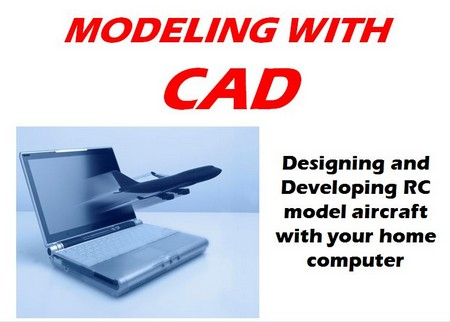
CADって何？
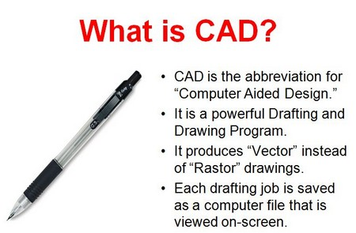
- CADとは、"Computer Aided Design " ~コンピューターの支援を受けた設計~ の略称です。
- 強力な製図・描画プログラムです。
- CADは「ラスター：ドット（点）の集合としての画像」ではなく「ベクター：線画」による図面を作成します。
- 各図面の作成作業はコンピューターにファイルとして保存され、画面上で見ることができます。なぜCADを使いたいのか？
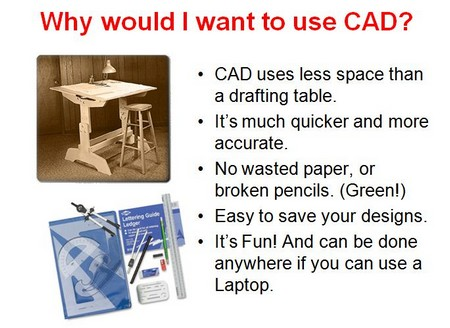
- CADは製図台よりも少ないスペースで使用できます。
- より早く、より正確に仕上げることができます。
- 無駄な紙や、折れた鉛筆を使うこともありません。(環境に優しい！)
- デザインの保存が簡単です。
- 楽しい！ノートパソコンがあれば、どこでもデザインができる。ご注意下さい！ CADは、それ自体が、あなたのまったく新しい趣味になる可能性があります！
どんなメリットがあるの？
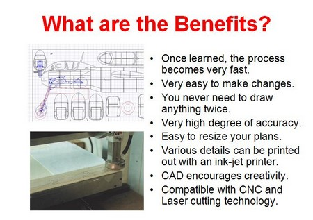
- 一度覚えると、作業がとても速くなる。
- 変更も簡単です。
- 同じものを２度描きする必要がない。
- 非常に高い精度が得られる。
- 図面のサイズ変更が簡単にできる。
- 様々なディテールをインクジェットもしくはレーザープリンターで印刷することができる。
- CADは創造性を刺激する。
- CNCやレーザー加工に対応しています。入門編
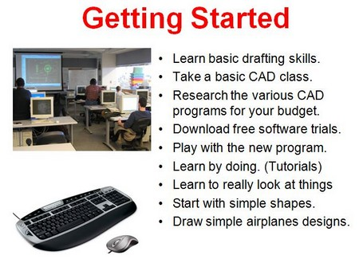
- 基本的な製図技術を身につける。
- CADの基礎講座を受講する。
- 予算に応じて様々なCADプログラムを調べる。
- ソフトウェアの無料体験版をダウンロードする。
- 新しいソフトで遊んでみる。
- 実際に操作して学ぶ。(チュートリアル)
- 物事を本当に見ることを学ぶ
- シンプルな形から始める。
- 簡単な飛行機のデザインを描く。デザインや描画のプログラムを使い始めたいモデラーのために特別に作られた、手頃な価格のCADプログラムがいくつかあります。また、ウェブからダウンロードできる "Lite "プログラムもあり、手軽に始めることができます。
筆者は、アシュラ社のCADプログラム「グラファイト」を発売以来、ずっと使っています。このプログラムは、最も簡単で素早く学べるCADプログラムだと私は思っています。私はグラファイトを使って多くのRC飛行機を設計してきましたが、現在はバージョン9を使用しています。
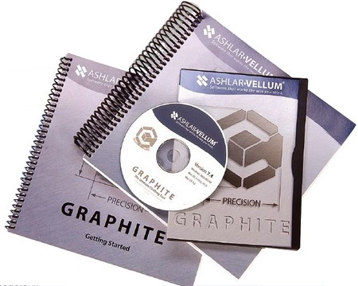
Graphiteは現在、「クラウド」ダウンロードプログラムとして提供されており、GRAPHITE から毎月のサブスクリプション支払で使用することができます。
自分だけのモデルをデザインする
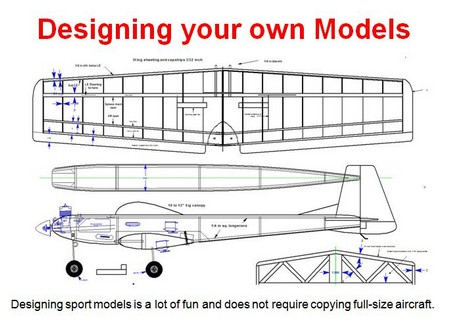
スポーツモデルのデザインはとても楽しく、実物大の飛行機をコピーする必要はありません。このCAD Kaos 号は、私がCADにトレースした最初のデザインです。その後、デザインを簡略化し、現代のハードウェアを追加しました。オリジナルのKaos 60と同じように、素晴らしい飛行ができる飛行機となっています。
スケールモデルのデザイン
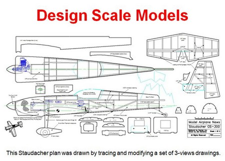
このシュタウダッハーの設計図は、3面図一式をトレースし、修正することで描かれました。スケール飛行機に関しては、CADを使えば、どんな飛行機でも、完全に近いコピーを製作することができます。簡単な設計から始めて、より複雑な設計に挑戦してください。
シュタウダッハーのための基礎知識
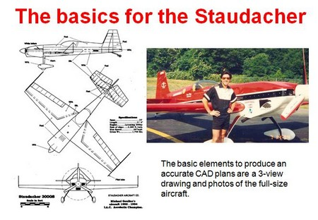
正確なCAD図面を作成するための基本要素は、３面図と実機の写真です。実機図面の探し方
図面のインポート
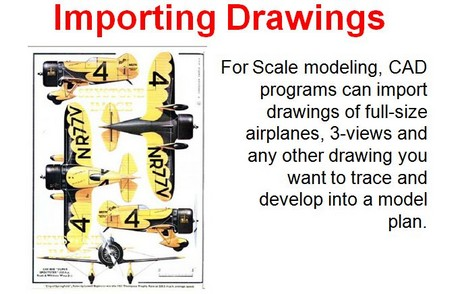
スケールモデリングでは、実物大の航空機の図面や３面図など、トレースしてモデルの設計図に展開したい図面をCADプログラムに取り込むことができます。
使用するプログラムによって、ビットマップ、Tiff、JPGなどの画像ファイルをインポートすることができます。
LibreCAD における図面の取り込み方
現物の寸法
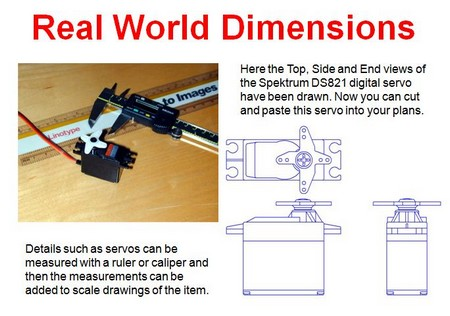
ここでは、Spektrum DS821デジタルサーボの上面図、側面図、端面図が描かれています。これで、このサーボを図面にカット＆ペーストすることができます。
サーボのような細部は、定規やノギスで測定し、その測定値をアイテムのスケール図に追加することができます。
図面を作成するもう1つの方法は、図面を作成したいものを直接測定することです。
RCハードウエア
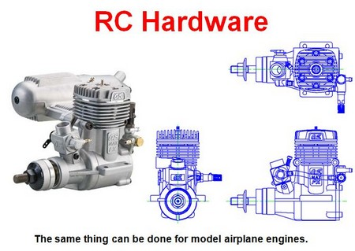
模型飛行機のエンジンも同じことができます。

※２ 最近では、RCハードウェア会社のウェブサイトに、サーボ・受信機・バッテリーなどの寸法・３面図などが載っていることも多いので、これらをダウンロードして、自分の図面に取り込むことも出来ます。
電動ダクトファンユニット
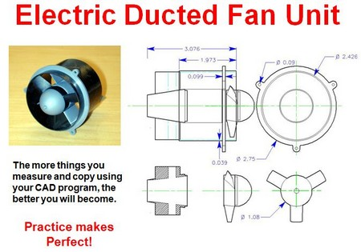
CADを使って、たくさんのものを測り、コンピューター上で作図すればするほど、上達します。練習あるのみです！
筆者の基本ルール
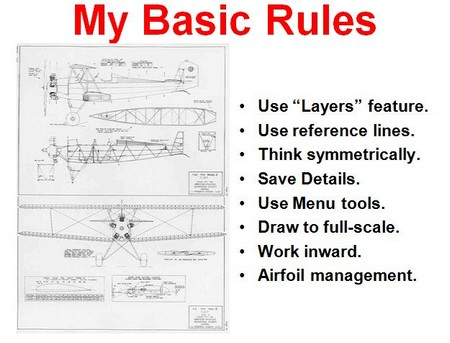
- 「レイヤー ※１」機能を使う。
- 基準線を使う。
- 左右対称に考える。
- 詳細を保存する。
- メニューツールを使う。
- 原寸大で描く。
- 内側に向かって作業する。
- 翼型（Airfoil：例 Clark - Y 等）を管理する。
※１ レイヤー（Layer：層 例えば、基になる３面図、機体の輪郭、寸法線、モーター・電源関連部品、リンケージ関連部品.....etc などを、それぞれの階層に分けて描画し、必要に応じて線の種類、太さ、色などを変え、判りやすくする。また、ある階層を編集不可にしたり、印刷しないようにもできる。）
作者：伊藤が使用しているラジコン飛行機の自作用の DXFファイルのテンプレートがこれです。（zip ファイル：4KB）
既存の飛行機図面をトレースする製図作業には、筆者が作ったいくつかのルールがあり、これらに従うと、一連の作業がとても楽になります。
線と図形
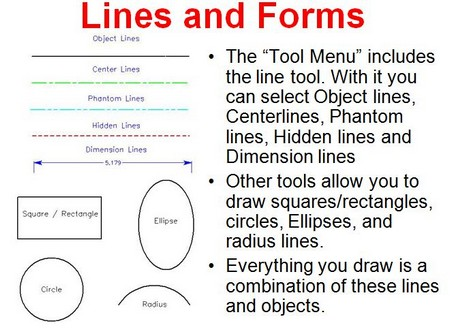
- 「ツールメニュー」にはラインツールがあります。ラインツールの中から、物体を示す実線、中心線、透視線、隠れ線、寸法線などを選択することができます。
- その他のツールでは、正方形/長方形、円、楕円、円弧などを描くことができます。
- あなたが作図するものはすべて、これらの線と図形の組み合わせなのです。CADソフトウェアが持っている機能を知ることは、そのソフトを効率よく使うための第一歩でもあります。
メニューバーのツール
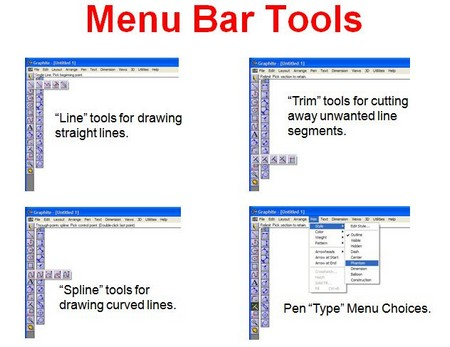
- 直線を引くための「ライン」ツール。
- 「トリム」不要な線分をカットするツールです。
- 「スプライン」ツールは、曲線を描くためのツールです。
- ペンの「種類」をプルダウンメニューで選択しているところ。これらのツールは、画面上のツールバーに並んだボタン（アイコン）とプルダウンメニューの中にあります。
基準線（相対関係を考えながら作図する）
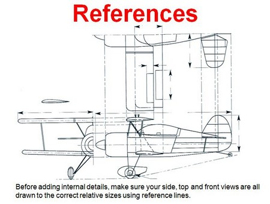
機体、各翼内部の細部構造を追加する前に、側面図、上面図、正面図が、相対的なサイズに正しく描かれていることを、基準線を使って確認します。モデルの正面図、側面図、上面図を作成した後、それらの縮尺が互いにすべて合っていることを確認する必要があります。これは、設計図の詳細を作成し、スパー、フォーマー、リブなどを追加する前に重要なことです。
胴体基準線
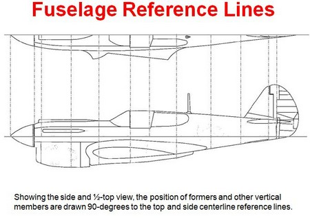
側面図と上面図（半分）では、フォーマーやその他の垂直部材の位置は、上面と側面の中心線基準線に対して90度の角度で描かれています。主翼の画像をスキャンする
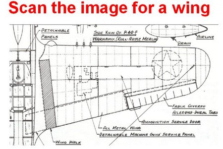
これは、第二次大戦当時に William Wylam 氏によって作図されたP-40ウォーホークの図面の一部をスキャンし、CADソフトに取り込んだものです。モデルの翼を作図してゆく手順は、以下を参照してください。
William Wylam 氏が作図した航空関連の図面資料は、こちらのサイトSCRIBD:Results for “Wylam Aviation Drawings”で見ることができます。
メニューツールの使用
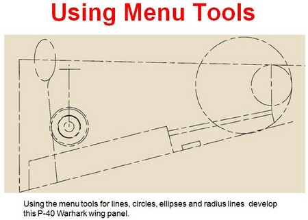
線、円、楕円、半径線のメニューツールを使って、このP-40ウォーホークの翼のパネルを作成します。フリーハンドの「スプラインライン・ツール」を使う代わりに、ツールバーのツールを使って、翼のアウトラインのさまざまな形状と、基本的なディテールを作図するようにしてみてください。
不要な部分を切り取る：トリミング
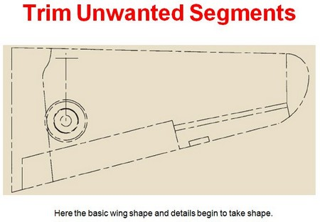
翼の基本的な形とディテールが形になってきました。だんだんと、それらしい形が見えてきましたね！内側に向かって作業し、ディテールを描き込む
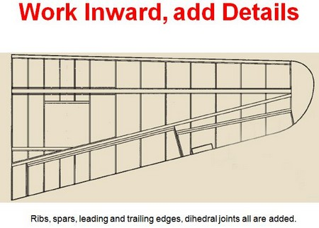
リブ、スパー、前縁材と後縁材、ディヘドラルジョイント（左右の主翼を接合する部品：いわゆるカンザシ）などのディテールが描き加えられました。こうして完成した右主翼の鏡像を作り、それを反転させ、元の図面に追加すれば、完成した主翼が作図できます。
翼型を図面に取り込む（インポート）
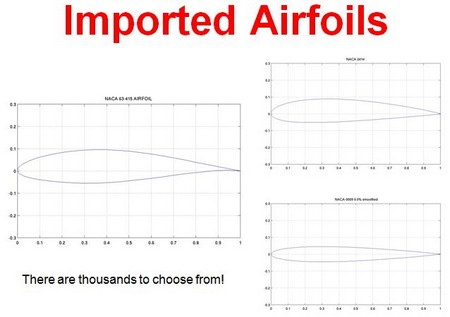
既存の何千もの翼型（Airfoil）中から、あなたの機体に使いたいものを選ぶことができます！リブをフリーハンドで描こうとしないでください。必要な翼型をダウンロードし、CADファイルに追加するだけです。
テーパー翼の作図
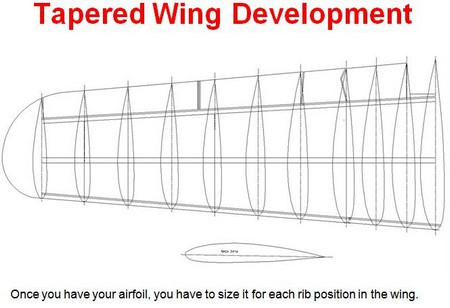
翼型ができたら、主翼内の各リブの位置に合わせて、それぞれのリブの寸法を決めなければなりません。リブの作図
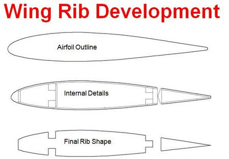
- 翼型のアウトライン
- 内部ディテール
- リブの最終形状他の部分の作図方法と同様に、リブも基本翼型の外側から始めて、内側に向かって段階的に作図していきます。
ロフティング・リブの作図方法は？
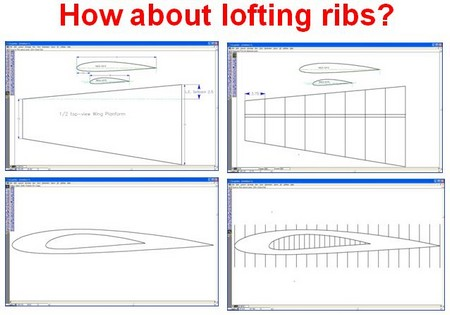
翼の根元から先端に向かって変化するプログレッシブな翼型を持つ翼を製作したい場合には、リブを段階的に高くしてゆく（Lofting）することができます。翼のプランフォームとリブの配置から始めまてみましょう。リブが均等に配置されていることを確認してください。翼型を積み重ね、いくつかのステーションに等分割します。
ロフティング・リブ その２
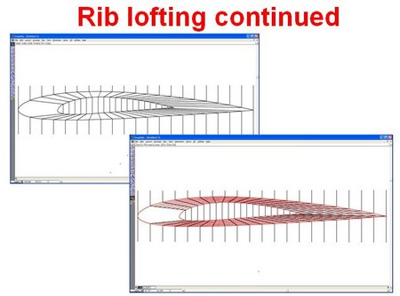
翼の先端から根元のリブまでのステーションラインをつなぎます。次に、これらの線を必要なリブの数で分割します。10枚のリブが必要な場合は、10等分してください。
リブの翼型形状を作成する
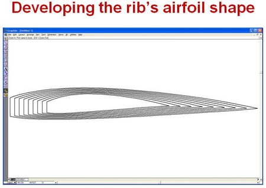
スプラインツールを使って、点と点を結び、個々のリブを作成します。後端からスタートし、前縁までリブを進めていきます。ステーションラインとプロジェクションラインを削除すると、上のような、各リブのアウトラインが出来上がります。
最終的なリブのアウトライン
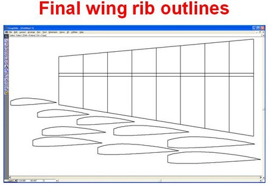
これが翼の平面図とリブです。あとは、内側に向かって、スパー用の切り欠きや、翼のプランク材の厚み、上半角ブレース（カンザシ）、前縁材、後縁材などのディテールを追加していきます。
フォーマー（胴枠）の作成
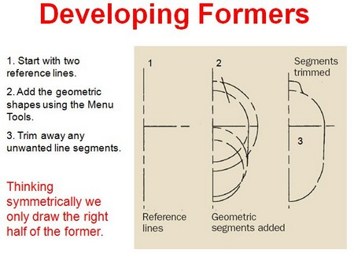
1 基準線
2 幾何学的なセグメントの追加
3 セグメントのトリミング1. 2本の基準線から始めます。
2. メニューツールを使って幾何学的形状を追加します。
3. 不要な線分をトリミングして切り取ります。左右対称に考えて、各胴枠の右半分だけ描きます。胴枠も基本的には、これまでと同じ手法で作図します。
内側に向かって作図を進める
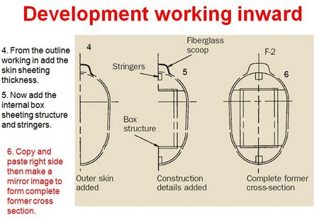
4 アウタースキン（外皮構造）の追加
5 グラスファイバー製エアースクープ
メインとなるボックス構造
構造のディテールが追加された。
6 胴枠 F-2 完成した胴枠の断面図4. 作業中のアウトラインから、スキンシートの厚さを追加します。
5. 内部の箱型シート構造とストリンガーを追加します。
6. 右側をコピーして貼り付け、鏡像にして元の断面を完成させます。大変な作業ですが、最終的には完璧にフィットしたパーツが出来上がりました。
胴枠部品の完成
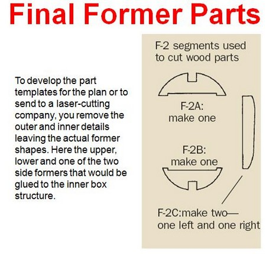
F-2 木材の切断に使用するセグメント
F-2A：1枚作成
F-2B:1枚作る
F-2C：左右に2つ作る図面やレーザー加工業者に送るための部品テンプレートを作成するために、外形や内形のディテールを取り除き、実際の胴枠形状を残します。ここでは、インナーボックス構造に接着される上部、下部、および２つの側部胴枠のうちの１つを示しています。
パーツをプリントアウトし、木材に貼り付けてカットします！
胴体の新しい断面を作る
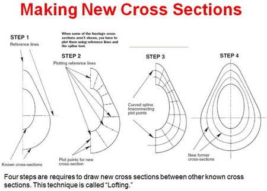
ステップ1、基準線と、既知の断面を表す線。胴体の新しい断面がまだ作図されていない場合、基準線とスプラインツールを使ってプロットする必要があります。
STEP 2 、基準線のプロット
新しい断面のためのプロットポイントSTEP 3、プロットポイントを結ぶ、曲線スプライン・ライン・コネクティングプロットポイント。
STEP 4 、新しい胴体断面図
既知の断面の間に新しい断面を描くには、4つのステップが必要です。この技法は "ロフティング "と呼ばれます。胴枠のロフト加工は、リブのロフト加工と全く同じ手法で行います。
レーザーカットのためのデザイン
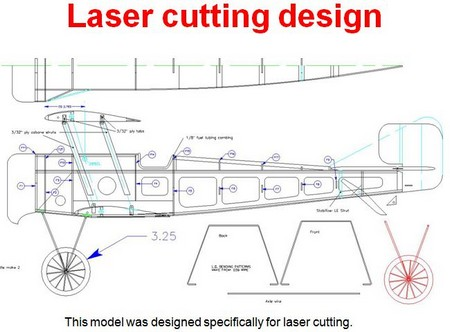
このモデルは、レーザーカッティングを用いて製作するために、特別に設計されています。自分でパーツを切り出したくないのなら、CADファイルを送って、あなたのためにパーツをレーザーカットしてくれる誰かを見つけましょう。
精密なインターロッキング構造
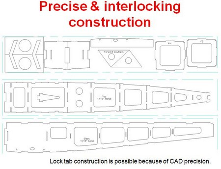
CADの精度が高いからこそ、市販のレーザーカットキットのような、ロックタブ構造が可能になります。これらのパーツは、強度と軽量性を備えた簡素化されたモデル構造を形成するために、インターロックするレーザーカットパーツを製造するために特別に設計されました。多くの場合、それらのパーツの位置合わせ・はめ合わせは自動的に決まります。
ブリストル・スカウトの機体
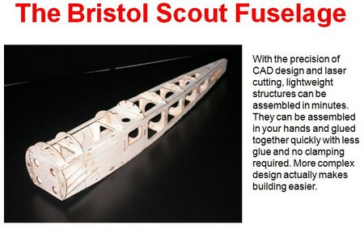
CAD設計とレーザーカットの精密さにより、軽量な構造物を数分で組み立てることができます。手に持って組み立て、少ない接着剤で素早く接着することができ、クランプも必要ありません。より複雑なデザインは、実はビルドをより簡単にします。瞬間接着剤のはみ出しからおさらばしよう！
作る楽しさはそのまま
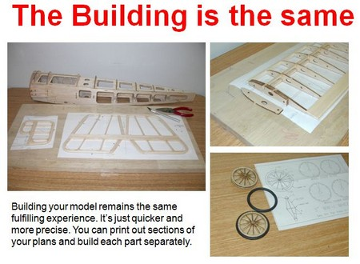
CADソフトを使って模型を作ることは、充実した体験であることに変わりはありません。ただ、より早く、より正確に作ることができます。図面の一部をプリントアウトして、パーツごとに組み立てることも可能です。他にどんなことができるのでしょうか？
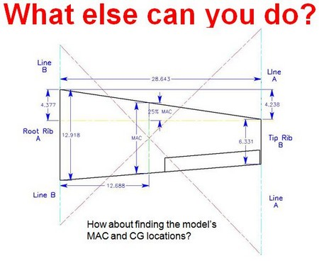
CADソフトを使って、モデルのMAC（空力平均翼弦）とCG（重心位置）の位置を見つけるのはいかがでしょうか？モデルを設計・製作した後でも、CADプログラムを使用して、望ましいCGの位置を把握するなど、他の作業を行うことができます。
後退翼、テーパー翼の場合でも可能です
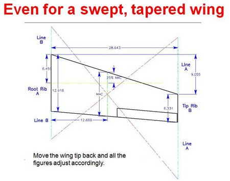
翼端を後ろに移動させれば、すべての数値がそれに応じて調整されます。何をすべきかを知っていれば、すべて簡単なことです。CADはとても役に立ちます。
側面から見た場合の重心位置計算
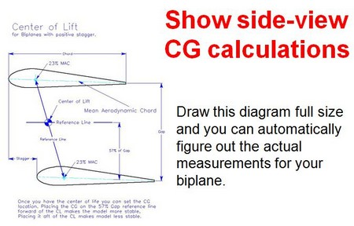
この図を原寸大で描くと、複葉機の実測値が自動的に把握できます。揚力中心（Center of Lift）
上翼が下翼よりも前に出たスタッガータイプの複葉機の場合翼型の内側の水色の線が M.A.C（Mean Aerodynamic Chord）空力平均翼弦を示します。
揚力中心が決まれば、CG（Center of Gravity）の位置を設定することができます。
まず、上翼と下翼のMAC上に、前縁から25%の位置のそれぞれの点を結ぶ基準線を引きます。次に、上翼と下翼の間隔：GAP の57%の長さで、下翼のMACより垂直線をに引き、そこからさらにMACと平行に基準線を引きます。２本の基準線が交差する点が揚力中心CLとなります。
CGをCLより前方の、GAP 57%の基準線上に置くと、モデルはより安定します。CGをCLの後方に置くと、モデルは安定しなくなります。
あなたの製作する複葉機の適切な重心位置を把握するために、このサイドビュー（側面から見る）の手法は簡単です。
私のシンプルな複葉機のバランスセットアップにもCADソフトが使えます
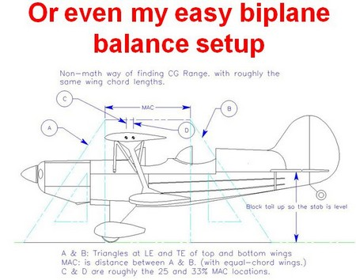
数学を使わない重心範囲の見つけ方。ただし、上下の主翼の翼弦長がおおよそ同じ場合。
○水平尾翼が水平になるようにカイモノを当てる。
A & B ：上翼前縁と下翼後縁に三角定規を当てる。
MAC：空力平均翼弦の長さは、A点とB点の間の距離となる。（等弦翼の場合）
C 及び D線の位置は、空力平均翼弦のおおよそ25%、33%を示している。翼面積についてはどうでしょうか？
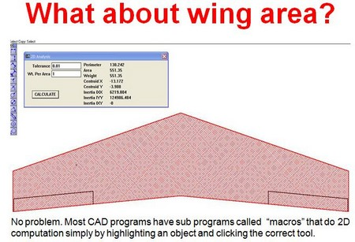
問題ありません。ほとんどのCADソフトには「マクロ」と呼ばれるサブプログラムがあり、オブジェクトをハイライトして適切なツールをクリックするだけで、主翼の平面形状の面積などに関する２D計算を行うことができます。完成したモデルの重量を測ましたか？ いいですね！ CADソフトを使えば、翼面積をすぐに求めることができるので、翼面荷重を把握することができます。
CADソフトについての結論
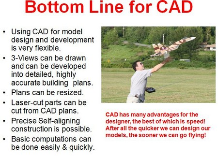
CADはデザイナーにとって多くの利点がありますが、その中でも最も優れているのはスピードです！結局のところ、モデルの設計が早ければ早いほど、すぐに飛ばすことができるのです！- モデルの設計と開発にCADを使用することは、非常に柔軟性があります。
- 機体の３面図を描き、詳細で精度の高い設計図に発展させることができます。
- 図面のサイズ変更も可能です。
- CADの図面から、レーザーカットマシンで部品を切り出すことができる。
- 精密なセルフアライメント構造を設計することがが可能です。
- 基本的な計算を簡単かつ迅速に行うことができます。Model Airplane News, Updated: January 26, 2021
Wingtips 目次へ
ホームへ